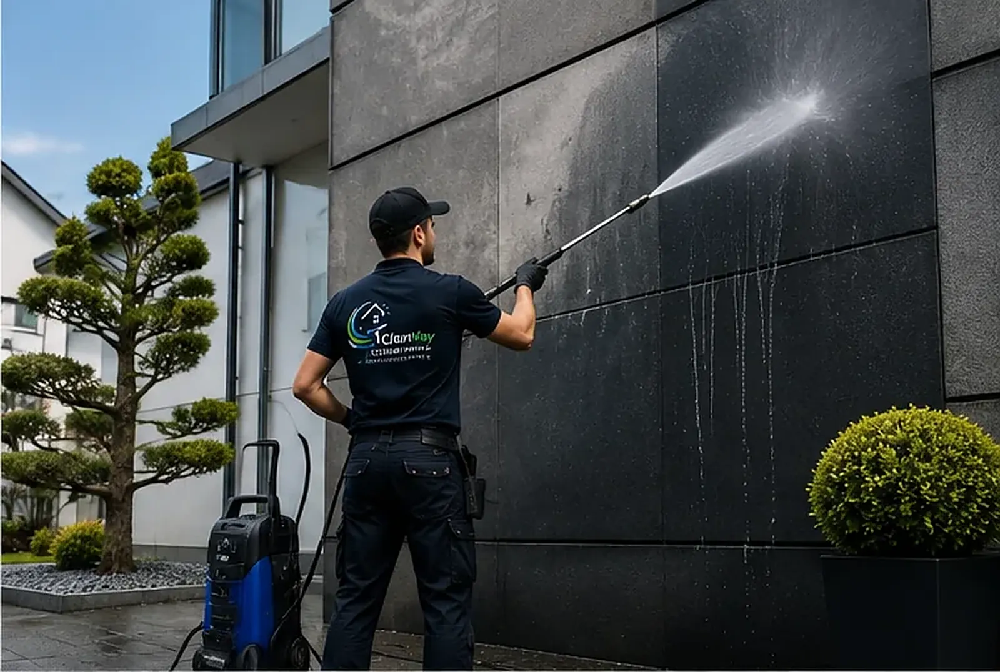
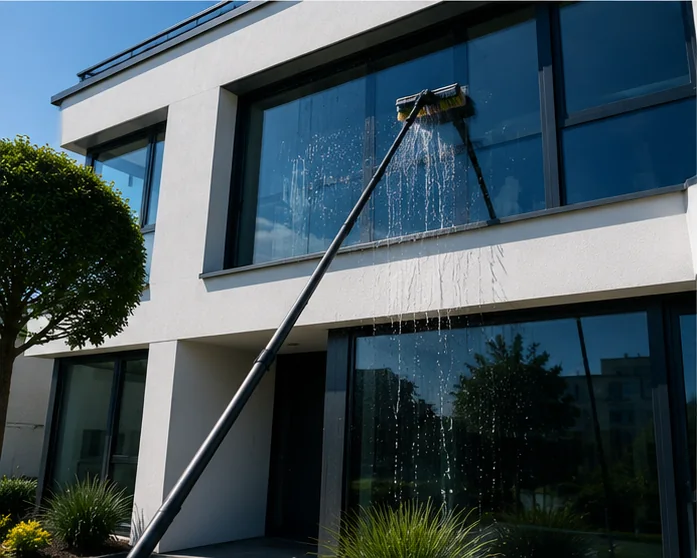

Fassadenreinigung
Ihre Fassade ist Ihre Visitenkarte.
Grünbelag an der Wetterseite, graue Schmutzfahnen unter den Fensterbänken: Wir holen den ursprünglichen Farbton Ihrer Fassade zurück – schonend und materialgerecht.
Vorher / Nachher
Was eine Fassadenreinigung wirklich bewirkt.
Beide Aufnahmen zeigen exakt dieselbe Wand. Ziehen Sie den Regler und vergleichen Sie selbst.
Werterhalt
Verschmutzung ist nicht nur ein optisches Problem.
Algen und Moose halten Feuchtigkeit dauerhaft an der Fassade. Das beschleunigt die Verwitterung von Putz und Anstrich – und eine Sanierung kostet ein Vielfaches der regelmäßigen Reinigung.
Eine gepflegte Fassade wirkt sich außerdem direkt auf den Eindruck von Käufern, Mietern und Kunden aus. Gerade bei Wohnanlagen und Gewerbeobjekten ist sie das Erste, was Besucher sehen.
- Entfernung von Grünbelag, Algen, Moos und Schmutzfahnen
- Werterhalt für Putz, Anstrich und Fugen
- Sichtbar gepflegter Auftritt für Ihr Objekt
Materialgerecht statt „volle Kraft“.
Nicht jede Fassade verträgt Hochdruck. Weichen Putz, gestrichene Flächen oder poröse Steine reinigen wir mit reduziertem Druck, passenden Reinigungsmitteln und ausreichend Einwirkzeit – das Ergebnis ist sauber, ohne die Oberfläche anzugreifen.
Vor jedem Auftrag prüfen wir das Material und legen an einer unauffälligen Stelle eine Probefläche an. So wissen beide Seiten vorher, wie das Ergebnis aussieht.
So arbeiten wir
Vom Erdgeschoss bis zum Giebel.


Gut zu wissen
Woher kommt der grüne Schleier überhaupt?
Der typische Grünbelag besteht aus Algen und Moosen, die Feuchtigkeit lieben. Deshalb trifft es zuerst die Wetterseite, beschattete Bereiche hinter Bäumen und Flächen, auf denen Regenwasser langsam abläuft – etwa unter Fensterbänken, wo sich die bekannten dunklen Fahnen bilden. Moderne, stark gedämmte Fassaden sind übrigens häufiger betroffen als alte: Ihre Oberfläche bleibt kühler, Tauwasser hält sich länger.
Für die Reinigung heißt das: Es reicht nicht, den Belag oberflächlich abzuspritzen. Wir arbeiten mit auf das Material abgestimmten Reinigern, die die Organismen vollständig abtöten – sonst ist der Schleier nach einem Jahr wieder da.
So läuft eine Fassadenreinigung bei uns typischerweise ab:
- Besichtigung: Material, Zustand und Zugänglichkeit prüfen
- Probefläche: an unauffälliger Stelle das Ergebnis zeigen
- Reinigung: abschnittsweise, mit passendem Druck und Mittel
- Nachbehandlung: auf Wunsch Langzeitschutz gegen Neubewuchs
- Abnahme: gemeinsamer Rundgang am fertigen Objekt
Umgebung und Bepflanzung decken wir während der Arbeiten ab; anfallendes Schmutzwasser wird fachgerecht abgeleitet.
Häufige Fragen
Fragen zur Fassadenreinigung.
Beschädigt die Reinigung den Putz oder den Anstrich?
Nein – wenn Verfahren und Druck zum Material passen. Genau deshalb prüfen wir die Fassade vorab und arbeiten bei empfindlichen Oberflächen mit reduziertem Druck oder chemisch unterstützter Reinigung statt mit voller Kraft.
Wie lange bleibt die Fassade sauber?
Das hängt von Lage, Beschattung und Bewuchs ab. Eine Wetterseite mit Bäumen davor setzt schneller wieder an als eine sonnige Südfassade. Auf Wunsch tragen wir nach der Reinigung einen Langzeitschutz auf, der Neubewuchs deutlich verzögert.
Braucht es dafür ein Gerüst?
In den meisten Fällen nicht. Mit Teleskoplanzen und Hubarbeitsbühnen erreichen wir die üblichen Gebäudehöhen deutlich günstiger als mit Gerüst. Was bei Ihrem Objekt sinnvoll ist, sehen wir bei der Besichtigung.
Passt dazu
Wenn schon Technik vor Ort ist – sinnvoll kombinieren.

Wie viel Farbe steckt noch in Ihrer Fassade?
Schicken Sie uns ein Foto Ihrer Fassade – wir sagen Ihnen ehrlich, welches Ergebnis realistisch ist, und nennen einen klaren Preis.